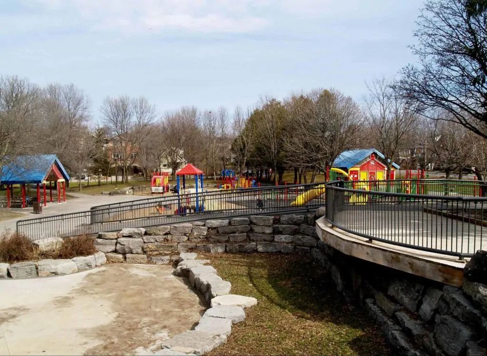
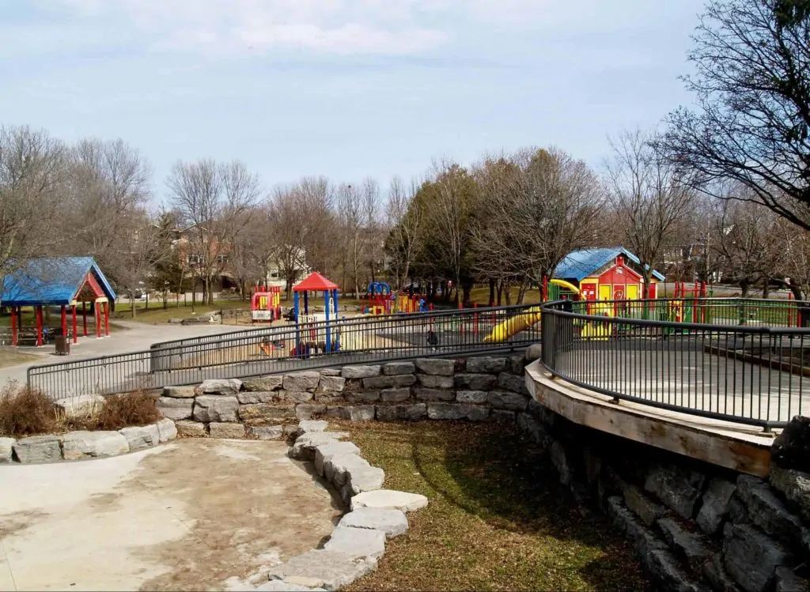

Discover the rich history of Ottawa by visiting its ancient historical sites. These sites offer a glimpse into the city's past, with captivating stories and architectural wonders that have stood the test of time.
 

Ottawa boasts numerous beautiful parks, providing a refreshing escape from the hustle and bustle of the city. Enjoy the lush greenery, serene lakes, and recreational activities for a perfect day out with family and friends.
| Places | Eatery | Address |
|---|---|---|
| Parliament Hill | The Albion Rooms | 33 Nicholas St |
| Canadian War Museum | Mill st. Brew Pub | 555 Wellington St |
| Rideau Canal | Chez Fatima | 125 Promenade Du Portage |
| ByWard Market Neighborhood | Bistro CoqLicorne | 59 Rue Laval 59 Laval Street |